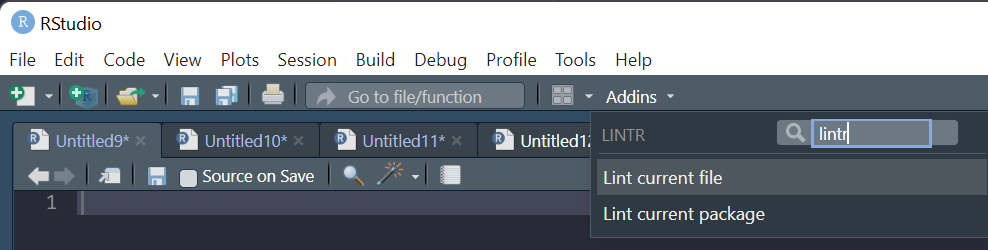

ae_attendances |>
filter(org_code %in% c("RNA", "RL4")) |>
mutate(performance = 1 + breaches / attendances) |>
filter(type == 1) |>
mutate(met_target = performance >= 0.95)Coffee and Coding
Good Coding Practices
You should care about your work
One of Guido’s key insights is that code is read much more often than it is written. The guidelines provided here are intended to improve the readability of code and make it consistent across the wide spectrum of Python code. As PEP 20 says, “Readability counts”.
A style guide is about consistency. Consistency with this style guide is important. Consistency within a project is more important. Consistency within one module or function is the most important.
PEP 8 - Style Guide for Python Code
Which is easier to read?
or
ae_attendances |>
filter(
org_code %in% c("RNA", "RL4"),
type == 1
) |>
mutate(
performance = 1 + breaches / attendances,
met_target = performance >= 0.95
). . .
spending a few seconds to neatly format your code can greatly improve the legibility to future readers, making the intent of the code far clearer, and will make finding bugs easier to spot.
. . .
(have you spotted the mistake in the snippets above?)
Tidyverse Style Guide
Good coding style is like correct punctuation: you can manage without it, butitsuremakesthingseasiertoread
All style guides are fundamentally opinionated. Some decisions genuinely do make code easier to use (especially matching indenting to programming structure), but many decisions are arbitrary. The most important thing about a style guide is that it provides consistency, making code easier to write because you need to make fewer decisions.
syntax key points
- object (+column) names should be
snake_case. Generally variables should be nouns, functions should be verbs. - avoid re-using names of common functions and variables
- break lines at 80 characters. If your line is too long, that’s a good sign you should be encapsulating some of the logic into a separate function
- Use
"instead of'for quoting text - pipes should be on separate lines
# Good
day_one
day_1
# Bad
DayOne
dayone# Good
day_one
# Bad
first_day_of_the_month
djm1
# Bad
T <- FALSE
c <- 10
mean <- function(x) sum(x)# Good
iris %>%
group_by(Species) %>%
summarize_if(is.numeric, mean) %>%
ungroup() %>%
gather(measure, value, -Species) %>%
arrange(value)
# Bad
iris %>%
group_by(Species) %>%
summarize_all(mean) %>%
ungroup() %>%
gather(measure, value, -Species) %>%
arrange(value){lintr} + {styler} are your new best friends
{lintr}
{lintr}is a static code analysis tool that inspects your code (without running it)- it checks for certain classes of errors (e.g. mismatched
{and(’s) - it warns about potential issues (e.g. using variables that aren’t defined)
- it warns about places where you are not adhering to the code style
{styler}
{styler}is an RStudio add in that automatically reformats your code, tidying it up to match the style guide- 99.9% of the time it will give you equivalent code, but there is the potential that it may change the behaviour of your code
- it will overwrite the files that you ask it to run on however, so it is vital to be using version control
- a good workflow here is to save your file, “stage” the changes to your file, then run
{styler}. You can then revert back to the staged changed if needed.
What does {lintr} look like?

running lintr can be done in the console, e.g.
lintr::lintr_dir(".")or via the Addins menu

Using {styler}

Further thoughts on improving code legibility
- do not let files grow too big
- break up logic into separate files, then you can use
source("filename.R)to run the code in that file - idealy, break up your logic into separate functions, each function having it’s own file, and then call those functions within your analysis
- do not repeat yourself - if you are copying and pasting your code then you should be thinking about how to write a single function to handle this repeated logic